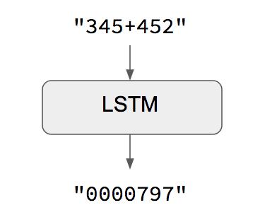
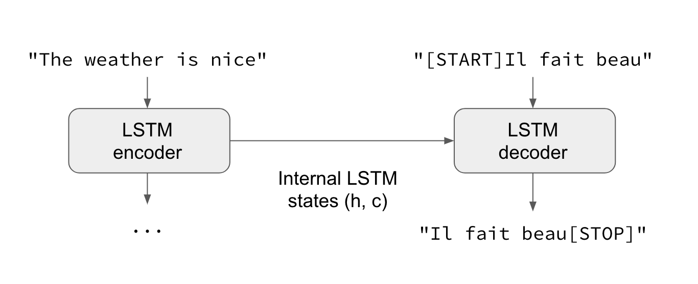
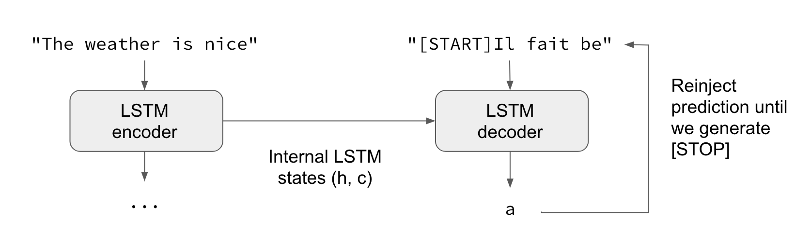

I see this question a lot -- how to implement RNN sequence-to-sequence learning in Keras? Here is a short introduction.
Note that this post assumes that you already have some experience with recurrent networks and Keras.
What is sequence-to-sequence learning?
Sequence-to-sequence learning (Seq2Seq) is about training models to convert sequences from one domain (e.g. sentences in English) to sequences in another domain (e.g. the same sentences translated to French).
"the cat sat on the mat" -> [Seq2Seq model] -> "le chat etait assis sur le tapis"
This can be used for machine translation or for free-from question answering (generating a natural language answer given a natural language question) -- in general, it is applicable any time you need to generate text.
There are multiple ways to handle this task, either using RNNs or using 1D convnets. Here we will focus on RNNs.
The trivial case: when input and output sequences have the same length
When both input sequences and output sequences have the same length, you can implement such models simply with a Keras LSTM or GRU layer (or stack thereof). This is the case in this example script that shows how to teach a RNN to learn to add numbers, encoded as character strings:

One caveat of this approach is that it assumes that it is possible to generate target[...t] given input[...t]. That works in some cases (e.g. adding strings of digits) but does not work for most use cases. In the general case, information about the entire input sequence is necessary in order to start generating the target sequence.
The general case: canonical sequence-to-sequence
In the general case, input sequences and output sequences have different lengths (e.g. machine translation) and the entire input sequence is required in order to start predicting the target. This requires a more advanced setup, which is what people commonly refer to when mentioning "sequence to sequence models" with no further context. Here's how it works:
- A RNN layer (or stack thereof) acts as "encoder": it processes the input sequence and returns its own internal state. Note that we discard the outputs of the encoder RNN, only recovering the state. This state will serve as the "context", or "conditioning", of the decoder in the next step.
- Another RNN layer (or stack thereof) acts as "decoder":
it is trained to predict the next characters of the target sequence,
given previous characters of the target sequence.
Specifically, it is trained to turn the target sequences into
the same sequences but offset by one timestep in the future,
a training process called "teacher forcing" in this context.
Importantly, the encoder uses as initial state the state vectors from the encoder,
which is how the decoder obtains information about what it is supposed to generate.
Effectively, the decoder learns to generate
targets[t+1...]giventargets[...t], conditioned on the input sequence.

In inference mode, i.e. when we want to decode unknown input sequences, we go through a slightly different process:
- 1) Encode the input sequence into state vectors.
- 2) Start with a target sequence of size 1 (just the start-of-sequence character).
- 3) Feed the state vectors and 1-char target sequence to the decoder to produce predictions for the next character.
- 4) Sample the next character using these predictions (we simply use argmax).
- 5) Append the sampled character to the target sequence
- 6) Repeat until we generate the end-of-sequence character or we hit the character limit.

The same process can also be used to train a Seq2Seq network without "teacher forcing", i.e. by reinjecting the decoder's predictions into the decoder.
A Keras example
Let's illustrate these ideas with actual code.
For our example implementation, we will use a dataset of pairs of English sentences and their French translation, which you can download from manythings.org/anki. The file to download is called fra-eng.zip. We will implement a character-level sequence-to-sequence model, processing the input character-by-character and generating the output character-by-character. Another option would be a word-level model, which tends to be more common for machine translation. At the end of this post, you will find some notes about turning our model into a word-level model using Embedding layers.
The full script for our example can be found on GitHub.
Here's a summary of our process:
- 1) Turn the sentences into 3 Numpy arrays,
encoder_input_data,decoder_input_data,decoder_target_data:encoder_input_datais a 3D array of shape(num_pairs, max_english_sentence_length, num_english_characters)containing a one-hot vectorization of the English sentences.decoder_input_datais a 3D array of shape(num_pairs, max_french_sentence_length, num_french_characters)containg a one-hot vectorization of the French sentences.decoder_target_datais the same asdecoder_input_databut offset by one timestep.decoder_target_data[:, t, :]will be the same asdecoder_input_data[:, t + 1, :].
- 2) Train a basic LSTM-based Seq2Seq model to predict
decoder_target_datagivenencoder_input_dataanddecoder_input_data. Our model uses teacher forcing. - 3) Decode some sentences to check that the model is working (i.e. turn samples from
encoder_input_datainto corresponding samples fromdecoder_target_data).
Because the training process and inference process (decoding sentences) are quite different, we use different models for both, albeit they all leverage the same inner layers.
This is our training model. It leverages three key features of Keras RNNs:
- The
return_statecontructor argument, configuring a RNN layer to return a list where the first entry is the outputs and the next entries are the internal RNN states. This is used to recover the states of the encoder. - The
inital_statecall argument, specifying the initial state(s) of a RNN. This is used to pass the encoder states to the decoder as initial states. - The
return_sequencesconstructor argument, configuring a RNN to return its full sequence of outputs (instead of just the last output, which the defaults behavior). This is used in the decoder.
from keras.models import Model
from keras.layers import Input, LSTM, Dense
# Define an input sequence and process it.
encoder_inputs = Input(shape=(None, num_encoder_tokens))
encoder = LSTM(latent_dim, return_state=True)
encoder_outputs, state_h, state_c = encoder(encoder_inputs)
# We discard `encoder_outputs` and only keep the states.
encoder_states = [state_h, state_c]
# Set up the decoder, using `encoder_states` as initial state.
decoder_inputs = Input(shape=(None, num_decoder_tokens))
# We set up our decoder to return full output sequences,
# and to return internal states as well. We don't use the
# return states in the training model, but we will use them in inference.
decoder_lstm = LSTM(latent_dim, return_sequences=True, return_state=True)
decoder_outputs, _, _ = decoder_lstm(decoder_inputs,
initial_state=encoder_states)
decoder_dense = Dense(num_decoder_tokens, activation='softmax')
decoder_outputs = decoder_dense(decoder_outputs)
# Define the model that will turn
# `encoder_input_data` & `decoder_input_data` into `decoder_target_data`
model = Model([encoder_inputs, decoder_inputs], decoder_outputs)
We train our model in two lines, while monitoring the loss on a held-out set of 20% of the samples.
# Run training
model.compile(optimizer='rmsprop', loss='categorical_crossentropy')
model.fit([encoder_input_data, decoder_input_data], decoder_target_data,
batch_size=batch_size,
epochs=epochs,
validation_split=0.2)
After one hour or so on a MacBook CPU, we are ready for inference. To decode a test sentence, we will repeatedly:
- 1) Encode the input sentence and retrieve the initial decoder state
- 2) Run one step of the decoder with this initial state and a "start of sequence" token as target. The output will be the next target character.
- 3) Append the target character predicted and repeat.
Here's our inference setup:
encoder_model = Model(encoder_inputs, encoder_states)
decoder_state_input_h = Input(shape=(latent_dim,))
decoder_state_input_c = Input(shape=(latent_dim,))
decoder_states_inputs = [decoder_state_input_h, decoder_state_input_c]
decoder_outputs, state_h, state_c = decoder_lstm(
decoder_inputs, initial_state=decoder_states_inputs)
decoder_states = [state_h, state_c]
decoder_outputs = decoder_dense(decoder_outputs)
decoder_model = Model(
[decoder_inputs] + decoder_states_inputs,
[decoder_outputs] + decoder_states)
We use it to implement the inference loop described above:
def decode_sequence(input_seq):
# Encode the input as state vectors.
states_value = encoder_model.predict(input_seq)
# Generate empty target sequence of length 1.
target_seq = np.zeros((1, 1, num_decoder_tokens))
# Populate the first character of target sequence with the start character.
target_seq[0, 0, target_token_index['\t']] = 1.
# Sampling loop for a batch of sequences
# (to simplify, here we assume a batch of size 1).
stop_condition = False
decoded_sentence = ''
while not stop_condition:
output_tokens, h, c = decoder_model.predict(
[target_seq] + states_value)
# Sample a token
sampled_token_index = np.argmax(output_tokens[0, -1, :])
sampled_char = reverse_target_char_index[sampled_token_index]
decoded_sentence += sampled_char
# Exit condition: either hit max length
# or find stop character.
if (sampled_char == '\n' or
len(decoded_sentence) > max_decoder_seq_length):
stop_condition = True
# Update the target sequence (of length 1).
target_seq = np.zeros((1, 1, num_decoder_tokens))
target_seq[0, 0, sampled_token_index] = 1.
# Update states
states_value = [h, c]
return decoded_sentence
We get some nice results -- unsurprising since we are decoding samples taken from the training test.
Input sentence: Be nice.
Decoded sentence: Soyez gentil !
-
Input sentence: Drop it!
Decoded sentence: Laissez tomber !
-
Input sentence: Get out!
Decoded sentence: Sortez !
This concludes our ten-minute introduction to sequence-to-sequence models in Keras. Reminder: the full code for this script can be found on GitHub.
References
- Sequence to Sequence Learning with Neural Networks
- Learning Phrase Representations using RNN Encoder-Decoder for Statistical Machine Translation
Bonus FAQ
What if I want to use a GRU layer instead of a LSTM?
It's actually a bit simpler, because GRU has only one state, whereas LSTM has two states. Here's how to adapt the training model to use a GRU layer:
encoder_inputs = Input(shape=(None, num_encoder_tokens))
encoder = GRU(latent_dim, return_state=True)
encoder_outputs, state_h = encoder(encoder_inputs)
decoder_inputs = Input(shape=(None, num_decoder_tokens))
decoder_gru = GRU(latent_dim, return_sequences=True)
decoder_outputs = decoder_gru(decoder_inputs, initial_state=state_h)
decoder_dense = Dense(num_decoder_tokens, activation='softmax')
decoder_outputs = decoder_dense(decoder_outputs)
model = Model([encoder_inputs, decoder_inputs], decoder_outputs)
What if I want to use a word-level model with integer sequences?
What if your inputs are integer sequences (e.g. representing sequences of words, encoded by their index in a dictionary)? You can embed these integer tokens via an Embedding layer. Here's how:
# Define an input sequence and process it.
encoder_inputs = Input(shape=(None,))
x = Embedding(num_encoder_tokens, latent_dim)(encoder_inputs)
x, state_h, state_c = LSTM(latent_dim,
return_state=True)(x)
encoder_states = [state_h, state_c]
# Set up the decoder, using `encoder_states` as initial state.
decoder_inputs = Input(shape=(None,))
x = Embedding(num_decoder_tokens, latent_dim)(decoder_inputs)
x = LSTM(latent_dim, return_sequences=True)(x, initial_state=encoder_states)
decoder_outputs = Dense(num_decoder_tokens, activation='softmax')(x)
# Define the model that will turn
# `encoder_input_data` & `decoder_input_data` into `decoder_target_data`
model = Model([encoder_inputs, decoder_inputs], decoder_outputs)
# Compile & run training
model.compile(optimizer='rmsprop', loss='categorical_crossentropy')
# Note that `decoder_target_data` needs to be one-hot encoded,
# rather than sequences of integers like `decoder_input_data`!
model.fit([encoder_input_data, decoder_input_data], decoder_target_data,
batch_size=batch_size,
epochs=epochs,
validation_split=0.2)
What if I don't want to use teacher forcing for training?
In some niche cases you may not be able to use teacher forcing, because you don't have access to the full target sequences, e.g. if you are doing online training on very long sequences, where buffering complete input-target pairs would be impossible. In that case, you may want to do training by reinjecting the decoder's predictions into the decoder's input, just like we were doing for inference.
You can achieve this by building a model that hard-codes the output reinjection loop:
from keras.layers import Lambda
from keras import backend as K
# The first part is unchanged
encoder_inputs = Input(shape=(None, num_encoder_tokens))
encoder = LSTM(latent_dim, return_state=True)
encoder_outputs, state_h, state_c = encoder(encoder_inputs)
states = [state_h, state_c]
# Set up the decoder, which will only process one timestep at a time.
decoder_inputs = Input(shape=(1, num_decoder_tokens))
decoder_lstm = LSTM(latent_dim, return_sequences=True, return_state=True)
decoder_dense = Dense(num_decoder_tokens, activation='softmax')
all_outputs = []
inputs = decoder_inputs
for _ in range(max_decoder_seq_length):
# Run the decoder on one timestep
outputs, state_h, state_c = decoder_lstm(inputs,
initial_state=states)
outputs = decoder_dense(outputs)
# Store the current prediction (we will concatenate all predictions later)
all_outputs.append(outputs)
# Reinject the outputs as inputs for the next loop iteration
# as well as update the states
inputs = outputs
states = [state_h, state_c]
# Concatenate all predictions
decoder_outputs = Lambda(lambda x: K.concatenate(x, axis=1))(all_outputs)
# Define and compile model as previously
model = Model([encoder_inputs, decoder_inputs], decoder_outputs)
model.compile(optimizer='rmsprop', loss='categorical_crossentropy')
# Prepare decoder input data that just contains the start character
# Note that we could have made it a constant hard-coded in the model
decoder_input_data = np.zeros((num_samples, 1, num_decoder_tokens))
decoder_input_data[:, 0, target_token_index['\t']] = 1.
# Train model as previously
model.fit([encoder_input_data, decoder_input_data], decoder_target_data,
batch_size=batch_size,
epochs=epochs,
validation_split=0.2)
If you have more questions, please reach out on Twitter.